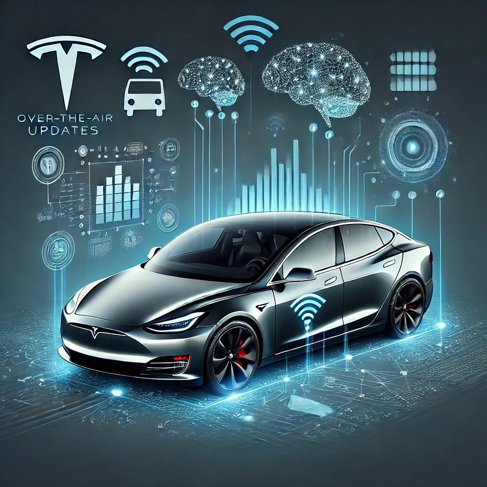

Qu’est-ce que la Data Science ? 🤔#
{kind=link}
La Data Science, c’est comme être un détective des données ! Imaginez-vous, avec une loupe géante, examinant des montagnes d’informations pour y trouver des trésors cachés, des vérités enfouies au fond des chiffres.
🎯 Définition#
La Data Science est un domaine multidisciplinaire combinant :
🧮 Mathématiques et la Statistique pour modéliser et interpréter les données.
💻 Informatique pour organiser, stocker, et traiter efficacement ces données.
🧠 Connaissances métier (business, santé, finance, etc.) pour comprendre les besoins et fournir des solutions concrètes.
L’évolution de la Data Science 📜#
Les années 60-70 : Les premiers pas 👴#
L’essor de l’informatique dans les années 1960 a permis aux premiers statisticiens d’exploiter la puissance des ordinateurs pour traiter des données en masse. Les bases de la data science moderne étaient posées.
Exemple : Les premières banques ont commencé à utiliser des modèles statistiques pour prédire les défauts de paiement de leurs clients. Ce qui prenait des mois à calculer manuellement pouvait désormais être fait en quelques heures grâce aux premiers ordinateurs.
Les années 2000 : L’ère du Big Data 💾#
Avec l’explosion d’Internet, les données ont commencé à se multiplier de façon exponentielle. Les entreprises comme Google et Amazon ont vu l’opportunité d’analyser ces énormes volumes de données pour créer des produits et services révolutionnaires.
Exemple : Google a mis en place des algorithmes comme PageRank, permettant de classer les pages web en fonction de leur pertinence, changeant ainsi la manière dont les utilisateurs accédaient à l’information en ligne.
2010 à aujourd’hui : La Data Science devient star 🌟#
Aujourd’hui, la Data Science est omniprésente. Elle propulse des secteurs entiers, de la médecine personnalisée à la conduite autonome. Des entreprises comme Tesla ou Netflix utilisent des algorithmes de machine learning pour améliorer leurs produits et optimiser l’expérience client.
Exemple : Netflix utilise la data science pour recommander des séries et des films personnalisés à chaque utilisateur, en analysant ses préférences de visionnage.
🚀 La Data Science en Action : Exemples Réels qui Ont Changé le Jeu#
1. 🏆 Sport : Liverpool FC révolutionne son recrutement#
{kind=link}
🎯 Le défi#
En 2015, Liverpool FC cherchait à améliorer ses performances sans dépenser des sommes astronomiques en transferts.
💡 La solution data-driven#
Utilisation du système de « transfert intelligent » basé sur des analyses statistiques avancées.
Collaboration avec Ian Graham, docteur en physique, pour développer des modèles prédictifs sophistiqués.
🏅 Résultats concrets#
Recrutement de Mohamed Salah en 2017 pour 36,9 millions de livres, basé sur des données. Salah est devenu le meilleur buteur de la Premier League en 2018 avec 32 buts.
Liverpool a remporté la Ligue des Champions en 2019 et la Premier League en 2020.
💰 Impact chiffré#
Valeur de Salah multipliée par 3 en une saison.
Liverpool a économisé des millions en évitant des transferts basés uniquement sur la réputation.
2. ⚽ Sport : Kevin De Bruyne négocie son salaire grâce à la data science#
{kind=link}
🎯 Le défi#
En 2021, Kevin De Bruyne, l’un des meilleurs milieux de terrain du monde, voulait renégocier son contrat avec Manchester City pour obtenir une augmentation de salaire sans faire appel à un agent traditionnel.
💡 La solution data-driven#
Kevin De Bruyne a fait appel à une équipe de data scientists pour analyser ses performances sur le terrain par rapport à d’autres joueurs.
L’analyse s’est basée sur des données avancées telles que :
Nombre de passes décisives.
Nombre de kilomètres parcourus par match.
Influence dans les phases de jeu.
Impact direct sur les victoires de l’équipe.
En plus de ses performances personnelles, l’équipe de data scientists a analysé les performances de Manchester City avec et sans lui sur le terrain, démontrant son importance cruciale pour l’équipe.
De plus, ils ont étudié les contrats de joueurs similaires dans d’autres équipes pour justifier son augmentation.
🏅 Résultats concrets#
Les données ont démontré que De Bruyne surpassait largement plusieurs autres joueurs clés dans des équipes concurrentes, non seulement par ses performances offensives (passes décisives, buts), mais aussi par son rôle dans la construction des actions et son influence globale sur le jeu.
La valeur ajoutée de De Bruyne pour Manchester City, en termes de victoires et de compétitivité, était nettement supérieure à celle de plusieurs autres milieux de terrain.
Grâce à cette approche data-driven, il a pu prouver que son impact sur l’équipe méritait une augmentation significative de son salaire.
💰 Impact chiffré#
Kevin De Bruyne a signé une prolongation de contrat de 4 ans, avec un salaire estimé à 20 millions de livres par an, ce qui fait de lui l’un des joueurs les mieux payés de Premier League.
Il a réussi à négocier ce contrat sans agent, en économisant ainsi une somme importante en frais d’agence (généralement environ 10 % de la valeur du contrat).
Cet exemple montre comment les joueurs peuvent désormais prendre leur carrière en main grâce à la data science, au lieu de se fier uniquement aux agents et aux négociations traditionnelles.
⚡ Un changement pour l’avenir du football ?#
L’utilisation de la data science par les joueurs pour négocier leurs contrats pourrait transformer le rôle des agents et les relations entre les clubs et les joueurs.
Transparence accrue : Les négociations basées sur des données rendent le processus plus transparent et factuel.
Autonomie des joueurs : Les joueurs peuvent démontrer leur valeur de manière quantifiable, ce qui pourrait inciter davantage de sportifs à suivre l’exemple de De Bruyne.
Changement dans les négociations : Plutôt que de s’appuyer uniquement sur la réputation ou les performances perçues, les clubs devront analyser en profondeur l’impact de chaque joueur à travers des données avancées.
3. 🎬 Divertissement : Netflix personnalise l’expérience utilisateur#
{kind=link}
🎯 Le défi#
Netflix voulait réduire le taux d’abandon des abonnés et augmenter le temps passé sur la plateforme.
💡 La solution data-driven#
Développement d’un algorithme de recommandation sophistiqué.
Analyse de plus de 30 millions de « plays » par jour et 4 millions d’évaluations.
🏅 Résultats concrets#
Personnalisation des miniatures des films/séries selon les préférences de l’utilisateur.
Recommandations ultra-ciblées basées sur l’historique de visionnage.
💰 Impact chiffré#
75% des visionnages proviennent des recommandations.
Économie de 1 milliard de dollars par an grâce à la rétention des abonnés.
4. 📧 Technologie : Gmail combat le spam#
{kind=link}
🎯 Le défi#
Google devait lutter contre le volume croissant de spam sans bloquer les emails légitimes.
💡 La solution data-driven#
Utilisation du machine learning pour analyser des milliards d’emails.
Mise à jour continue des modèles basée sur les signalements des utilisateurs.
🏅 Résultats concrets#
Détection de nouvelles formes de spam en temps réel.
Adaptation aux techniques évolutives des spammeurs.
💰 Impact chiffré#
Taux de détection du spam supérieur à 99,9%.
Moins de 0,1% de faux positifs (emails légitimes marqués comme spam).
5. 🏥 Santé : Détection précoce du cancer du sein#
{kind=link}
🎯 Le défi#
Améliorer la précision et la rapidité du dépistage du cancer du sein.
💡 La solution data-driven#
Google Health a développé un modèle d’IA analysant les mammographies.
Entraînement sur des dizaines de milliers d’images médicales.
🏅 Résultats concrets#
Le modèle surpasse les radiologues humains en termes de précision.
Réduction significative des faux positifs et faux négatifs.
💰 Impact chiffré#
Réduction de 5,7% des faux positifs et de 9,4% des faux négatifs par rapport aux radiologues.
Potentiel de sauver des milliers de vies grâce à une détection plus précoce.
6. 🚗 Automobile : Tesla améliore ses véhicules à distance#
{kind=link}
🎯 Le défi#
Améliorer continuellement les performances et la sécurité des véhicules après leur vente.
💡 La solution data-driven#
Collecte de données en temps réel à partir de la flotte de véhicules Tesla.
Utilisation du machine learning pour analyser les comportements de conduite.
🏅 Résultats concrets#
Mises à jour logicielles à distance (OTA) basées sur l’analyse des données.
Amélioration continue de l”Autopilot (conduite autonome).
💰 Impact chiffré#
Réduction de 40% des accidents lorsque l’Autopilot est activé.
Augmentation de l’autonomie des batteries jusqu’à 15% sans modification matérielle.
🗝️ Les concepts clés#
Concept |
Nom en anglais |
Définition |
Exemples |
|---|---|---|---|
Science des données |
Data Science |
Discipline qui combine la Statistique, l’informatique et les connaissances métiers pour extraire des informations utiles à partir de données. |
Analyse des ventes pour optimiser le stock, personnalisation des recommandations (ex. : Netflix). |
Intelligence artificielle |
Artificial Intelligence (AI) |
Domaine de l’informatique visant à créer des machines capables de simuler des comportements humains. |
Voitures autonomes, assistants vocaux comme Siri ou Alexa. |
Statistique |
Statistics |
Science de la collecte, de l’analyse, de l’interprétation et de la présentation des données. |
Calcul de la moyenne des salaires dans une entreprise, analyse des données d’enquête. |
Apprentissage automatique |
Machine Learning |
Branche de l’IA où les modèles apprennent à partir de données pour faire des prédictions ou des classifications. |
Prédiction des ventes d’un magasin, détection de spams dans les emails. |
Apprentissage profond |
Deep Learning |
Sous-branche du machine learning utilisant des réseaux neuronaux à plusieurs couches pour traiter des volumes massifs de données complexes. |
Reconnaissance d’images, analyse de texte, traduction automatique. |
Apprentissage supervisé |
Supervised Learning |
Type de machine learning où le modèle apprend à partir de données étiquetées pour prédire un résultat futur. |
Prédiction des prix immobiliers en fonction de la localisation et de la taille du bien. |
Apprentissage non supervisé |
Unsupervised Learning |
Type de machine learning où le modèle trouve des schémas cachés dans des données non étiquetées. |
Clustering de clients selon leurs habitudes d’achat. |
Réseaux neuronaux |
Neural Networks |
Modèles d’apprentissage inspirés du cerveau humain, utilisés pour résoudre des problèmes complexes. |
Reconnaissance d’images, traitement du langage naturel. |
Régression |
Regression |
Technique statistique qui modélise la relation entre une variable dépendante et des variables indépendantes. |
Prédiction du prix d’une voiture en fonction du kilométrage et de l’âge. |
Clustering |
Clustering |
Technique pour regrouper des données similaires en groupes sans étiquettes prédéfinies. |
Segmentation de clients en fonction de leurs comportements d’achat. |
Visualisation des données |
Data Visualization |
Représentation graphique des données pour faciliter l’interprétation et la communication des résultats. |
Graphiques à barres pour les ventes, diagrammes circulaires pour la répartition des clients. |
Big Data |
Big Data |
Ensemble de données volumineux et complexes nécessitant des technologies spécifiques pour être stocké et analysé. |
Analyse de milliards de transactions de clients sur des sites e-commerce. |
Modèles de classification |
Classification Models |
Algorithmes qui prédisent des catégories à partir des données, comme la classification binaire ou multi-classes. |
Classification des emails en « spam » ou « non-spam ». |
🧰 La boîte à outils du Data Scientist#
💻 Langages de programmation#
Python 🐍 : Le couteau suisse du Data Scientist, largement utilisé pour son accessibilité et sa riche collection de bibliothèques pour la data science.
Exemple : Utiliser Python pour analyser des données de ventes et prédire des tendances futures.
R 📊 : Le choix des statisticiens, très populaire pour les analyses statistiques et la visualisation de données.
Exemple : Utiliser R pour créer des graphiques détaillés montrant les corrélations entre des variables économiques.
📚 Bibliothèques et Frameworks#
pandas 🐼 : La bibliothèque favorite pour manipuler des données sous forme de tableaux.
Exemple : Nettoyer et transformer un ensemble de données avant de l’analyser.
scikit-learn 🔬 : L’outil de référence pour créer des modèles de machine learning en Python.
Exemple : Construire un modèle de classification pour prédire si un client abandonnera son panier d’achat en ligne.
Matplotlib et Seaborn 🎨 : Les bibliothèques indispensables pour créer des visualisations graphiques en Python.
Exemple : Créer des graphiques pour visualiser la répartition géographique des ventes d’un produit.
🖥️ Outils de visualisation#
Tableau : Un outil de visualisation professionnelle qui permet de créer des tableaux de bord interactifs et visuels.
Power BI : L’outil de visualisation de Microsoft pour des analyses commerciales et des rapports interactifs.
Google Looker Studio : Une solution gratuite pour créer des rapports de données directement dans le cloud.
⚙️ Environnements de développement#
Jupyter Notebook : Un environnement interactif où vous pouvez écrire et exécuter du code, ajouter des explications textuelles, et visualiser les résultats, le tout dans un seul document.
Google Colab : Comme Jupyter, mais hébergé dans le cloud, facilitant la collaboration et l’exécution sur des machines puissantes.